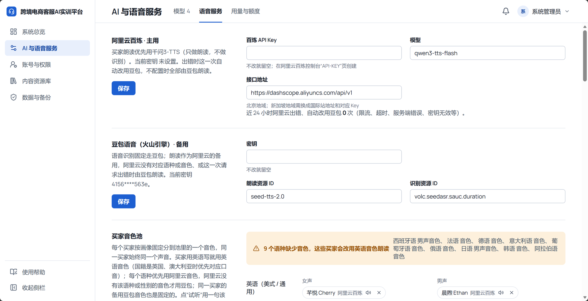
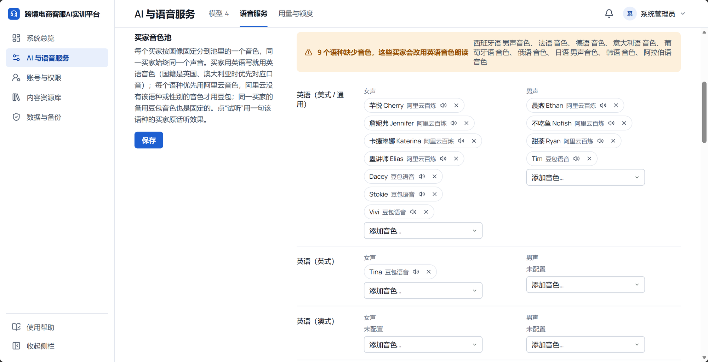

只改“买家音色池”这一块：现在每个音色占一行、竖着往下排，一个语种就有半屏高。改成一个语种一行，女声、男声各一格横排，点这一行在右侧抽屉里勾选音色。阿里云、豆包、计费三块不动。顺带把“配置得对不对”露出来：每行写清这个语种的买家现在实际听到什么，并给出一套按买家国籍推荐的配置。
先把底数理清，推荐配置按这个来。
| 事实 | 内容 | 来源 |
|---|---|---|
| 阿里云千问3-TTS-Flash | 共 49 个音色，每个音色都能说中、英、法、德、俄、意、西、葡、日、韩 10 种语言（同一音色多语言输出），没有阿拉伯语。其中 9 个是海外人设：西班牙大叔 Bodega、拉美大姐 Sonrisa、法国大哥哥 Emilien、德国青年 Lenn、意大利大叔 Dolce、巴西足球解说 Radio Gol、日本青梅竹马 Ono Anna、韩国欧尼 Sohee、俄罗斯 Alek。我们的目录里只登记了 7 个。 | 百炼文档《Qwen-TTS 音色列表》非实时语音合成部分；单价 0.8 元 / 万字 |
| 豆包 seed-tts-2.0 | 当前密钥能用：美式英语 Dacey、Stokie、Tim，英式 Tina，多语种 Vivi（英、日、西）。没有德、法、意、葡，也没有西语、日语男声。 | 2026-10-13 实测（kefu-weihu llm-gateway.md 第 7 节） |
| 买家来自哪里 | 随机抽到的买家国籍只有 10 个：美国、加拿大、英国、澳大利亚、德国、法国、西班牙、意大利、日本、巴西。老师在场景里能指定的语言只有英、西、法。俄语、韩语、阿拉伯语的买家不会出现。 | NATIONALITIES、SUPPORTED_LANGUAGES |
| 买家说什么语言 | 能用母语朗读的买家才用母语打字（D-43）。现在阿里云没填密钥，德国、法国、意大利、巴西买家，以及西班牙、日本男买家都退成了英语；配好后新会话起改用母语。 | D-43，resolveBuyerLanguage |
| 真实产品怎么摆 | 阿里云百炼、火山引擎的音色列表都是“一行一个音色 + 一句描述 + 试听”；呼叫中心（Amazon Connect、Genesys）按语种配置播报声音时，是一张“语种 → 声音”的表。我们两样都要：总览用语种表，挑选用带描述和试听的列表。 | 各家控制台 |
| 语种 | 买家来自 | 女声 | 男声 | 豆包备用 |
|---|---|---|---|---|
| 英语（美式） | 美国、加拿大 | 詹妮弗 Jennifer、芊悦 Cherry、苏瑶 Serena、四月 Maia；豆包 Dacey、Stokie | 艾登 Aiden、晨煦 Ethan、甜茶 Ryan、安德雷 Andre；豆包 Tim | 有 |
| 英式口音 | 英国 | 豆包 Tina | 没有英式男声，用美式 | — |
| 澳式口音 | 澳大利亚 | 两家都没有澳式口音，用美式 | — | |
| 德语 | 德国 | 卡捷琳娜 Katerina、四月 Maia、芊悦 Cherry | ★莱恩 Lenn、晨煦 Ethan、安德雷 Andre | 没有，阿里云出错时这一次用豆包英语 |
| 法语 | 法国 | 苏瑶 Serena、芊悦 Cherry、詹妮弗 Jennifer | ★埃米尔安 Emilien、安德雷 Andre、晨煦 Ethan | 没有 |
| 西班牙语 | 西班牙 | ★索尼莎 Sonrisa、芊悦 Cherry、苏瑶 Serena；豆包 Vivi | ★博德加 Bodega、晨煦 Ethan、甜茶 Ryan | 女声有（Vivi） |
| 意大利语 | 意大利 | 芊悦 Cherry、四月 Maia | ★多尔切 Dolce、晨煦 Ethan | 没有 |
| 日语 | 日本 | ★小野杏 Ono Anna、芊悦 Cherry；豆包 Vivi | 凯 Kai、晨煦 Ethan | 女声有（Vivi） |
| 葡萄牙语 | 巴西 | 芊悦 Cherry、苏瑶 Serena | 安德雷 Andre、晨煦 Ethan（巴西解说 Radio Gol 腔调太夸张，不默认放） | 没有 |
| 俄语 / 韩语 | 暂无 | 卡捷琳娜 Katerina / ★素熙 Sohee | ★阿列克 Alek / 晨煦 Ethan | — |
| 阿拉伯语 | 暂无 | 两家都没有，留空 | — | |
★ = 海外人设音色，放在第一位。目录只收适合成年买家的 24 个阿里云音色（每个带一句描述），儿童、萝莉、二次元、方言和助眠类不收；需要时仍可手动填音色 ID。非人设音色说外语的口音没有逐个听过，填好后用“试听”确认，不好就去掉。
| 现在 | 问题 | 改法 |
|---|---|---|
| 音色一个一行 | 英语女声 7 个音色就是 7 行加一个下拉，一个语种半屏高；12 个语种一屏只看得到 2 个，整块很长。 | 一个语种一行，女声、男声各一格，音色名横排成一行（放不下显示“+2”）。整块 9 行，一屏看完。 |
| 每格一个整宽“添加音色…”下拉 | 下拉里只有名字，看不出声音什么样、适不适合这个国家的买家；24 个下拉铺满页面。 | 点一行打开右侧抽屉：女声 / 男声切换，带描述、厂商和试听的勾选列表，海外人设音色标“推荐”放最前。 |
| 阿里云没填密钥，池里照样显示阿里云音色；顶部黄条把 9 个缺口连成一长串 | 看不出“为什么缺、缺了会怎样、去哪补”。实际上 9 个缺口是同一个原因：阿里云密钥没填。 | 黄条只说根因和影响，附“去填写”；没启用的厂商的音色变灰；每行最右写这个语种的买家现在实际听到什么（“德语朗读” / “改用英语”）。 |
| 12 个语种一样排 | 俄语、韩语、阿拉伯语买家不会出现；英式、澳式只是口音，缺了自动用美式，却和德语、法语占一样的位置、一样报缺。 | 每行写“买家来自哪里”；英式、澳式缩进挂在英语下；俄、韩、阿收进底部一行“当前买家国籍用不到”，可展开。缺口只算会出现的语种。 |
| 每个音色后面都写“阿里云百炼”“豆包语音” | 重复的字比音色名还多。 | 名字前一个小色点区分厂商，图例放在表头右上。 |
| 音色目录只有 7 个阿里云音色；带空格的 ID（Ono Anna、Radio Gol）保存时会被丢掉 | 挑不到德国、法国这类人设音色；手填也存不进去。 | 补目录（带描述和人设语种），校验放开空格；左栏加“填入推荐音色”。 |


一行一个语种：左边语种和买家来自哪里，中间女声、男声各一行音色名（紫点阿里云、灰点豆包，★人设音色），最右是这个语种买家实际听到的。都正常时上方只有一行摘要，没有黄条。鼠标停在一行上出现浅底和箭头，整行可点。左栏说明缩成一句，规则收进问号（下图展开了问号）。
抽屉里先选女声 / 男声，再勾音色。分三组：推荐（人设音色）、阿里云通用音色、豆包备用；豆包没有这个语种时，直接说清出错时会怎样。每行一个试听按钮，读一句德语买家原话。底部写已选几个、会怎么分配。勾完点“完成”回到页面，再点左栏“保存”生效（和现在一样）。
黄条只写一件事：阿里云密钥没填，影响是哪些买家改用英语，去哪填。池里的阿里云音色变灰但保留，填好密钥立刻生效。最右一列标出受影响的语种。
表格照常画，音色全灰，最右一列全是“—”；黄条说清现在的后果（不能朗读、买家都用英语）和去处。
| 部分 | 这次 |
|---|---|
| 买家音色池 | 版式按上图重做；英式、澳式挂在英语下；俄、韩、阿收进底部一行；“填入推荐音色”（会替换现在的池，先确认）；抽屉里勾选、试听 |
| 音色目录（后端） | 阿里云目录补到 24 个成年音色，每个带中文名、一句描述、人设语种；校验允许音色 ID 里有空格 |
| 每行“实际听到什么” | 要补接口 语音设置接口多返回每个语种 × 性别的实际情况（用哪家朗读、有没有同语种备用、是否改用英语），用现有 selectVoice 算，小改；顶部缺口提示只算买家会出现的语种 |
| 阿里云、豆包、计费三块 | 不动 |
| 买家与学生端 | 代码不动。阿里云配好后，德、法、意、巴西买家和西、日男买家新会话起用母语打字和朗读（D-43 已有的规则） |
要你做的一件事：在“阿里云百炼 · 主用”里填百炼 API Key 并保存（页面上填，不用发给我）。填好后我用试听逐个确认推荐音色能出声。